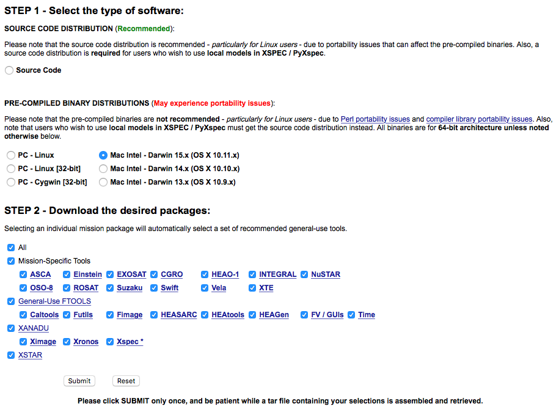

2. Software Installation¶
2.1. Swift - HEASoft¶
HEASoft developed by NASA is the major software for the Swift data reeducation, it provides several tools including xselect for data selection and xspec for spectrum fitting.
This example is for MacOS.
Install
XQuartzfor X window environment from xquartz.org.Install
Xcodefrom App Store, then by typing:xcode-select --install
in the terminal to install the
Command Line Tools.Install
gfortronfrom HPC.Download the compiled package of
HEAsoftfrom NASA’s HEASARC, here shows an example for Mac OS 10.11:

Uncompress HEAsoft to your application folder, here I put it in
/Applications/heasoft/, then go to/Applications/heasoft/x86_64-apple-darwin15.0.0/BUILD_DIR, and run:./configure >& config.out &
Create
.bash_profilefile in your home root folder\Users\Yourname\, add the content:HEADAS=/Applications/heasoft/x86_64-apple-darwin15.0.0 export HEADAS source $HEADAS/headas-init.sh
Download DS9 for X Window from Smithsonian Astrophysical Observatory, Uncompress
DS9andds9.zipto/Applications/heasoft/x86_64-apple-darwin15.0.0/bin.Done.
2.3. Local CALDB Setup¶
Calibration database (CALDB) system stores and indexes datasets associated with the calibration of satellites.
We are going to install the local CALDB in /Applications/heasoft/CALDB_LOCAL:
Downloading CALDB setup files, and uncompress to
/Applications/heasoft/CALDB_LOCAL.Downloading CALDB Calibration Data, and uncompress to
/Applications/heasoft/CALDB_LOCAL.The structure inside
/Applications/heasoft/will be like:CALDB_LOCAL ├── data │ ├── glast │ │ ├── lat │ │ └── gbm │ └── swift │ ├── bat │ ├── xrt │ ├── uvot │ └── mis └── software └── tools ├── alias_config.fits ├── caldb.config ├── caldbinit.csh ├── caldbinit.sh ├── caldbinit.unix ├── caldbinit.vms └── caldbinit_iraf.unixAdd to
~/.bash_profile:### LOCAL CALDB ######### CALDB=/Applications/heasoft/CALDB_LOCAL export CALDB CALDBCONFIG=$CALDB/software/tools/caldb.config export CALDBCONFIG CALDBALIAS=$CALDB/software/tools/alias_config.fits export CALDBALIAS source $CALDB/software/tools/caldbinit.sh
Done. We can check if the local CALDB is corrected installed by running
caldbinfo, open a new terminal:caldbinfo INST SWIFT XRT ** caldbinfo 1.0.2 ... Local CALDB appears to be set-up & accessible ** caldbinfo 1.0.2 completed successfully